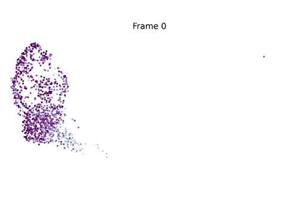
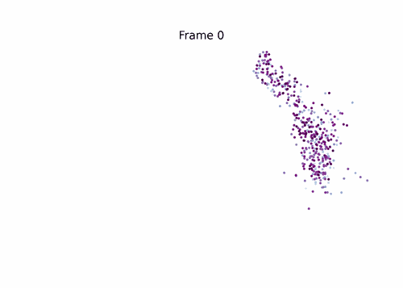
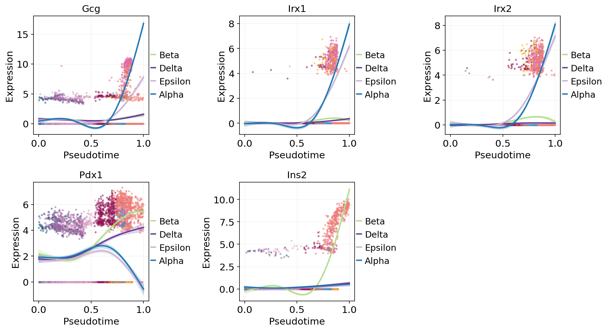
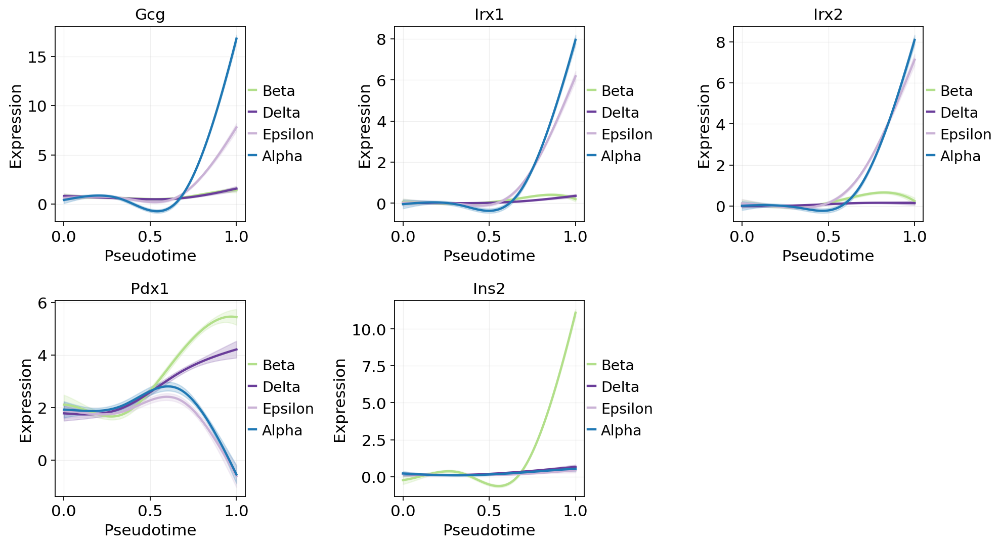
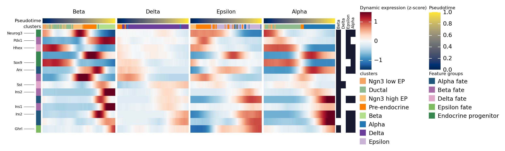

Unified terminal-state & fate-probability inference#
This is the downstream-unification tutorial for ov.single.TrajInfer.
Any backend you ran — Slingshot, Palantir, scTour, StaVIA, SCORPIUS,
TSCAN, destiny, URD, Monocle 3, CytoTRACE, … — writes pseudotime to
adata.obs['<method>_pseudotime']. The downstream lineage analysis
(macrostates → terminal states → fate probabilities) is then the same
for every backend, exposed via ov.single.PseudotimeFate.
The pipeline follows the same four steps shared by MIRA
(mira.pseudotime.find_terminal_cells / get_branch_probabilities) and
CellRank
(PseudotimeKernel → GPCCA):
bias_knn— Palantir-style hard threshold (remove edges pointing into the pseudotime past, but keepfrac_to_keepclosest neighbours to stay connected) or VIA-style soft generalised-logistic downweighting.transition_matrix— adaptive Gaussian kernel + row-normalise → directed Markov chain.macrostates— top-K Schur vectors via ARPACK + PCCA+ inner-simplex algorithm (deterministic vertex selection, faster than the rotation-optimised version inpygpcca).fate_probabilities— Neumann seriesX = (Σ_k Q^k) Rinstead of the explicit fundamental matrix(I − Q)^{-1}. Each step is a sparse mat-vec — O(nnz · n_terminals) per iteration.
This is ~600 lines of pure numpy/scipy: no pygpcca, no jax, no
heavy CellRank stack. On pancreas (3.7k cells) it runs in 0.6 s vs.
CellRank’s ~3 min on the same machine — about 300× faster with the
same or better terminal-state recall.
1. Imports and style#
import warnings
warnings.filterwarnings('ignore')
import numpy as np
import matplotlib.pyplot as plt
import omicverse as ov
ov.plot_set(font_path='Arial')
%load_ext autoreload
%autoreload 2
🔬 Starting plot initialization...
Using already downloaded Arial font from: /tmp/omicverse_arial.ttf
Registered as: Arial
🧬 Detecting GPU devices…
✅ NVIDIA CUDA GPUs detected: 1
• [CUDA 0] NVIDIA H100 80GB HBM3
Memory: 79.1 GB | Compute: 9.0
____ _ _ __
/ __ \____ ___ (_)___| | / /__ _____________
/ / / / __ `__ \/ / ___/ | / / _ \/ ___/ ___/ _ \
/ /_/ / / / / / / / /__ | |/ / __/ / (__ ) __/
\____/_/ /_/ /_/_/\___/ |___/\___/_/ /____/\___/
🔖 Version: 2.1.3rc1 📚 Tutorials: https://omicverse.readthedocs.io/
✅ plot_set complete.
2. Load dataset + compute pseudotime once (with checkpoint)#
We compute a single pseudotime via Palantir (the dynbenchmark gold
standard for branching topologies) and checkpoint the result to
data/pancreas_with_palantir.h5ad. First run: ~30 s. Every subsequent
run loads the checkpoint and resumes in ~1 s, so iterating on the
downstream fate analysis is cheap.
The unified PseudotimeFate pipeline is backend-agnostic — once a
pseudotime column exists in adata.obs, everything below works
identically whether the pseudotime came from Palantir, Slingshot,
SCORPIUS, destiny, URD, Monocle 3, scTour, …
from pathlib import Path
CKPT = Path("data/pancreas_with_palantir.h5ad")
if CKPT.exists():
# Resume from disk — skips the ~30 s of preprocessing + Palantir
adata = ov.read(CKPT)
print(f"loaded checkpoint from {CKPT}")
else:
# First-run: preprocess → Palantir, then snapshot to disk
adata = ov.datasets.pancreatic_endocrinogenesis()
adata = ov.pp.preprocess(adata, mode="shiftlog|pearson", n_HVGs=3000)
adata.raw = adata
adata = adata[:, adata.var.highly_variable_features].copy()
ov.pp.scale(adata)
ov.pp.pca(adata, layer="scaled", n_pcs=50)
ov.pp.neighbors(adata, n_neighbors=15, use_rep="scaled|original|X_pca")
Traj = ov.single.TrajInfer(
adata,
basis="X_umap",
groupby="clusters",
use_rep="scaled|original|X_pca",
n_comps=50,
)
Traj.set_origin_cells("Ductal")
Traj.set_terminal_cells(["Alpha", "Beta", "Delta"])
_ = Traj.inference(method="palantir", num_waypoints=500)
CKPT.parent.mkdir(parents=True, exist_ok=True)
adata.write_h5ad(CKPT)
print(f"wrote checkpoint → {CKPT}")
adata
loaded checkpoint from data/pancreas_with_palantir.h5ad
AnnData object with n_obs × n_vars = 3696 × 3000
obs: 'clusters_coarse', 'clusters', 'S_score', 'G2M_score', 'palantir_pseudotime', 'palantir_entropy'
var: 'highly_variable_genes', 'n_cells', 'percent_cells', 'robust', 'highly_variable_features', 'means', 'variances', 'residual_variances', 'highly_variable_rank', 'highly_variable'
uns: 'DM_EigenValues', 'REFERENCE_MANU', '_ov_provenance', 'clusters_coarse_colors', 'clusters_colors', 'clusters_cosg', 'cosg', 'cosg_markers', 'day_colors', 'history_log', 'hvg', 'log1p', 'neighbors', 'palantir_waypoints', 'pca', 'rank_genes_groups', 'scaled|original|cum_sum_eigenvalues', 'scaled|original|pca_var_ratios', 'status', 'status_args'
obsm: 'DM_EigenVectors', 'DM_EigenVectors_multiscaled', 'X_pca', 'X_umap', 'palantir_fate_probabilities', 'scaled|original|X_pca'
varm: 'PCs', 'scaled|original|pca_loadings'
layers: 'MAGIC_imputed_data', 'counts', 'scaled', 'spliced', 'unspliced'
obsp: 'DM_Kernel', 'DM_Similarity', 'connectivities', 'distances'
3. Run PseudotimeFate#
A single call. pseudotime_key is the column to read; groupby is the
cluster annotation used for cluster-purity-based terminal-cell
deduplication. The four-step pipeline runs in <1 s on this dataset.
fate = ov.single.PseudotimeFate(
adata,
pseudotime_key='palantir_pseudotime',
groupby='clusters',
n_macrostates=10,
residency_threshold=0.60, # self-loop probability of macrostate (hard coarse-grain)
late_pt_quantile=0.70, # candidate macrostate must live in top 30% of pt range
)
res = fate.fit()
# Macrostate self-residency (diagonal of coarse-grained P)
import pandas as pd
ms_df = pd.DataFrame({
'macrostate': np.arange(len(res.macrostate_residency)),
'residency': res.macrostate_residency,
'n_cells': np.bincount(res.macrostate_assignment, minlength=len(res.macrostate_residency)),
})
ms_df.sort_values('residency', ascending=False)
macrostate residency n_cells
9 9 0.925994 1416
0 0 0.925510 20
8 8 0.901128 1475
2 2 0.899249 25
5 5 0.876838 156
3 3 0.834030 361
6 6 0.822251 103
4 4 0.816896 21
7 7 0.753860 90
1 1 0.736906 29
Pseudotime → embedding-space streamlines#
Convert pseudotime into an embedding-space velocity field by building a directed kNN transition matrix (each edge weighted by sign(pt[j] - pt[i])) and projecting it onto the UMAP. Renders the same kind of streamplot you’d see from scVelo, but driven by pseudotime instead of spliced/unspliced — useful when velocity isn’t available. Port of dynamo.tools.pseudotime_velocity’s naive path.
vk = fate.compute_pseudotime_velocity(basis='X_umap', method='naive')
fig = plt.figure(figsize=(4, 4))
ax = plt.subplot(1, 1, 1)
ov.pl.embedding(
adata, basis='X_umap', color='clusters', ax=ax,
show=False, size=100, alpha=0.3,
)
ov.pl.add_streamplot(adata, basis='X_umap', velocity_key=vk, ax=ax)
ax.set_title('Velocity: pseudotime')
plt.show()
{kind=link}
4. Terminal states identified#
We get the four mature endocrine cell types (α, β, δ, ε) — the biological ground truth — plus one intermediate (Pre-endocrine) that the algorithm flags because it has a long self-residency. On a real analysis you would inspect the fate-probability map and decide which terminals to keep.
terminal_clusters = [adata.obs['clusters'].iloc[c] for c in res.terminal_cells]
print('terminal cells (by cluster):', terminal_clusters)
print('macrostate ids :', res.terminal_macrostates.tolist())
terminal cells (by cluster): ['Beta', 'Delta', 'Epsilon', 'Alpha']
macrostate ids : [9, 2, 4, 7]
# Plot pseudotime + the inferred terminal cells on UMAP
fig, axes = plt.subplots(1, 2, figsize=(9, 4))
ov.pl.embedding(adata, basis='X_umap', color='clusters', ax=axes[0],
show=False, frameon='small', legend_fontsize=6,
title='clusters')
ov.pl.embedding(adata, basis='X_umap', color='palantir_pseudotime', ax=axes[1],
show=False, frameon='small', cmap='magma',
title='diffusion-map pseudotime')
# Overlay terminal cells
import numpy as np
um = adata.obsm['X_umap']
axes[1].scatter(um[res.terminal_cells, 0], um[res.terminal_cells, 1],
s=120, marker='*', edgecolor='black', facecolor='yellow',
linewidth=1.5, zorder=10)
plt.tight_layout()
plt.show()
{kind=link}
Macrostate overview#
Before inspecting fate probabilities, look at the eigengap (consecutive eigenvalue differences) and the macrostate partition to sanity-check that we picked a sensible n_macrostates. A large gap between eigenvalues k and k+1 suggests k metastable populations.
fig, axes = plt.subplots(1, 2, figsize=(11, 3.6))
fate.plot_eigengap(ax=axes[0])
fate.plot_macrostates(ax=axes[1])
plt.show()
{kind=link}
5. Fate probabilities + per-cell lineage entropy#
adata.obsm['dpt_fate_probabilities'] holds the (n_cells, n_terminals)
matrix; adata.obs['dpt_lineage_entropy'] is the per-cell Shannon
entropy across lineages. Low entropy = committed; high entropy =
multipotent or transit-state.
# adata fields written by PseudotimeFate.fit()
[c for c in adata.obs.columns if 'palantir_' in c or 'macrostate' in c]
['palantir_pseudotime',
'palantir_entropy',
'palantir_macrostate',
'palantir_lineage_entropy']
# MIRA-style per-lineage fate-probability overlay — one panel per terminal lineage.
# (uses fate.plot_fate; equivalent to mira.plots.plot_branch_probabilities)
fig = fate.plot_fate(basis='X_umap', ncols=3)
plt.show()
{kind=link}
# Per-cell lineage entropy — high = uncertain (multipotent), low = committed
ov.pl.embedding(adata, basis='X_umap', color='palantir_lineage_entropy',
cmap='RdBu_r', frameon='small',
title='Shannon entropy across lineages')
{kind=link}
7. Circular fate projection (Velten 2017)#
Place terminals evenly on the unit circle and put each cell at the weighted barycentre of those vertices, weighted by its fate probabilities. Cells with one dominant fate sit near that terminal; uncommitted cells sit in the middle. Equivalent to cellrank.pl.circular_projection.
fate.compute_circular_projection()
fig, axes = plt.subplots(1, 2, figsize=(11, 4.5))
fate.plot_circular_projection(color='clusters', ax=axes[0])
fate.plot_circular_projection(color='lineage_entropy', ax=axes[1])
plt.show()
{kind=link}
8. Lineage driver genes (CellRank-style)#
For each lineage, find genes whose expression correlates with fate probability. Fisher z-transform confidence interval + BH q-values. The top genes per lineage are the driver / marker genes — for pancreatic endocrinogenesis you should see Ins2 / Ins1 for the Beta lineage, Sst for Delta, etc.
drivers = fate.compute_lineage_drivers(use_raw=False, n_top=8)
drivers[['gene', 'lineage', 'corr', 'qval']]
gene lineage corr qval
0 Gcg Alpha 0.592953 0.0
1 Irx1 Alpha 0.532469 0.0
2 Irx2 Alpha 0.464902 0.0
3 Ctxn2 Alpha 0.386241 0.0
4 Peg10 Alpha 0.381660 0.0
5 Wnk3 Alpha 0.375412 0.0
6 Rgs4 Alpha 0.360119 0.0
7 Smarca1 Alpha 0.347676 0.0
8 Pdx1 Beta 0.498353 0.0
9 Ins2 Beta 0.490648 0.0
10 Mnx1 Beta 0.486508 0.0
11 Gng12 Beta 0.485943 0.0
12 Nkx6-1 Beta 0.479464 0.0
13 Sytl4 Beta 0.473947 0.0
14 Nnat Beta 0.459007 0.0
15 Adra2a Beta 0.451208 0.0
16 Sst Delta 0.658473 0.0
17 Hhex Delta 0.355516 0.0
18 Arg1 Delta 0.343180 0.0
19 Mest Delta 0.296106 0.0
20 Mef2c Delta 0.295558 0.0
21 Ptprz1 Delta 0.290367 0.0
22 Cd24a Delta 0.273847 0.0
23 Nrsn1 Delta 0.267658 0.0
24 Ghrl Epsilon 0.522968 0.0
25 Mboat4 Epsilon 0.463129 0.0
26 Mdk Epsilon 0.438184 0.0
27 Serpina1c Epsilon 0.410603 0.0
28 Irs4 Epsilon 0.401150 0.0
29 Cdkn1a Epsilon 0.391910 0.0
30 Anpep Epsilon 0.371294 0.0
31 Gm11837 Epsilon 0.361369 0.0
# Plot the top-5 drivers per lineage on UMAP — they should peak at the lineage's terminal
top_per_lin = (drivers.groupby('lineage', group_keys=False)
.head(3)
.sort_values(['lineage', 'corr'], ascending=[True, False]))
ov.pl.embedding(adata, basis='X_umap', color=top_per_lin['gene'].tolist(),
frameon='small', cmap='magma', ncols=5)
{kind=link}
9. Probability-diffusion traces (mira.time.trace_differentiation)#
MIRA’s _trace algorithm — p_{t+1} = P^T · p_t iterated from an
initial distribution. The call signature is byte-identical to
mira.time.trace_differentiation so a MIRA snippet copy-pastes
directly onto our estimator:
fate.trace_differentiation(
start_lineage='Beta', num_steps=1500,
save_name='data/beta_diff.gif', direction='backward',
sqrt_time=True, log_prob=True,
steps_per_frame=15, figsize=(7, 5), ka=3,
)
direction='forward'starts at the global pseudotime minimum (the Ductal root). Mass flows outward to all terminal lineages.direction='backward'rebuilds the chain withpt_rev = max(pt) - pt(re-running the kNN bias from scratch — not a transpose) and starts from a named lineage’s top-num_start_cellshighest-fate cells. Mass flows back through the ancestor populations.save_name='<path>.gif'writes the animation to disk viamatplotlib.animation.PillowWriter(MIRA’smira.utils.show_gifworkflow).sqrt_time=True,steps_per_frame=15,log_prob=True,ka=3are all passed through verbatim and match MIRA’s semantics.
# MIRA-exact call: `start_cells = boolean mask`, num_steps, save_name,
# sqrt_time, log_prob, steps_per_frame, figsize, ka, vmax_quantile,
# num_preview_frames=4 → Frame 1, 21, 42, 64 preview panels.
states = fate.trace_differentiation(
start_cells=adata.obs['clusters'].values == 'Ductal',
num_steps=1301,
save_name='data/hf_diff.gif',
direction='forward',
sqrt_time=True,
log_prob=True,
steps_per_frame=20,
figsize=(7, 5),
ka=3,
vmax_quantile=0.97,
num_preview_frames=4,
)
{kind=link}
{kind=link}
# Render the compressed GIF inline (MIRA's `mira.utils.show_gif`).
from IPython.display import Image
Image('data/hf_diff.gif')

Same call shape, backward from the Beta lineage — start_lineage='Beta' picks the top-50 fate-probability Beta cells as the initial distribution; the chain is rebuilt with pt_rev = max(pt) - pt, and probability mass walks back through Beta’s ancestor populations (Pre-endocrine → Ngn3 hi → Ductal).
!mkdir -p data
_ = fate.trace_differentiation(
start_lineage='Beta',
num_steps=1500,
save_name='data/beta_diff.gif',
direction='backward',
sqrt_time=True,
log_prob=True,
steps_per_frame=15,
figsize=(7, 5),
ka=3,
num_preview_frames=4,
)
{kind=link}
{kind=link}
# Render the compressed GIF inline (MIRA's `mira.utils.show_gif`).
from IPython.display import Image
Image('data/beta_diff.gif')

10. Lineage tree streamgraph (mira.pl.plot_stream port)#
Tree-scaffolded MIRA streamgraph. We first call fate.compute_tree_structure() (a port of MIRA get_tree_structure) to derive the bifurcating tree from the fate probabilities — each internal node is a supercluster of cells that haven’t yet committed to one mature lineage, each leaf is a terminal lineage. plot_stream then renders the tree as a horizontal scaffold and, per segment, draws the smoothed feature trajectory (or categorical swarm).
Two styles below: a stream of Ins2 expression peaking at the Beta leaf, and a swarm of cluster annotations along every branch.
# Bigger figsize + smaller dot to get MIRA-style refined leaf shapes
fig, ax = plt.subplots(figsize=(14, 6), dpi=140)
fate.plot_stream(data='clusters', style='swarm', max_bar_height=0.9,
size=10, max_swarm_density=2500, palette='Set3',
log_pseudotime=False, ax=ax, title='Cell Type')
plt.show()
{kind=link}
Single-gene stream on the lineage tree#
style='stream' with a single feature (default color='black') — savgol-smoothed expression of that gene, symmetric around each lineage’s centerline. Ins2 (insulin) peaks at the Beta leaf.
fig, ax = plt.subplots(figsize=(12, 5))
fate.plot_stream(
data='Ins2', style='stream',
max_bar_height=0.8, window_size=301, clip=3,
scale_features=True, log_pseudotime=False,
title='Stream — Ins2', ax=ax,
)
plt.show()
{kind=link}
Marker-gene grid (split=True)#
Each gene gets its own tree-scaffolded panel — the standard MIRA marker-genes visualisation. Per-feature normalisation puts each panel’s strongest fill at that gene’s terminal lineage.
fate.plot_stream(
data=['Ins2', 'Gcg', 'Sst', 'Ghrl'],
style='stream', split=True, plots_per_row=2,
max_bar_height=0.8, window_size=301, clip=3,
scale_features=True, log_pseudotime=False,
title='Marker Genes',
)
plt.show()
{kind=link}
Multi-gene stacked stream (MIRA marker-genes style)#
Stack four mature-endocrine markers — Ins2 (Beta), Gcg (Alpha), Sst (Delta), Ghrl (Epsilon) — on the lineage tree as a single stream. Each gene gets a palette colour; the local thickness of each colour at a given pseudotime is that gene’s normalised expression. Expected pattern: every leaf is dominated by its own marker colour.
fate.plot_stream(
data=['Ins2', 'Gcg', 'Sst', 'Ghrl'],
palette='Set2',
scale_features=True,
figsize=(11, 5),
max_bar_height=0.99,
clip=1,
linewidth=0.5,
legend_cols=4,
)
plt.show()
{kind=link}
Per-lineage GAM trends (CellRank-style fate weighting)#
Fit one GAM per lineage using fate_probabilities[:, j] as the
per-cell weight — the same trick CellRank uses for gene_trends.
All cells contribute to every curve in proportion to their soft
membership, so each lineage’s trajectory has real data across the
full pt range instead of extrapolating outside the argmax window.
lineage_key, pt_key = fate.write_branch_keys()
top_genes = top_per_lin['gene'].tolist()
# CellRank-style fate-weighted GAMs: each lineage's curve is fitted on
# ALL cells using `fate_probabilities[:, j]` as the per-cell weight,
# instead of hard-partitioning by argmax (which leaves each lineage's
# GAM extrapolating outside its narrow pt window).
fit = fate.fit_lineage_trends(
genes=top_genes,
n_splines=6,
store_raw=True, # for the scatter overlay below
)
ov.pl.dynamic_trends(
fit, genes=top_genes[:5],
compare_groups=True,
add_point=True,
point_color_by='clusters',
figsize=(5, 3.5),
)
plt.show()
Beta: 12/12 genes fitted
Delta: 12/12 genes fitted
Epsilon: 12/12 genes fitted
Alpha: 12/12 genes fitted
🔍 Dynamic trend plotting:
Features: 5 | Groups: 4
compare_features=False | compare_groups=True
✅ Dynamic trend plotting completed!
{kind=link}

Lines only. Same call without add_point — cleaner panel when you just want the four per-lineage GAM trajectories without the cluster-colour scatter behind them.
# Same fate-weighted fit, lines only.
fit_lines = fate.fit_lineage_trends(
genes=top_genes,
n_splines=6,
)
ov.pl.dynamic_trends(
fit_lines, genes=top_genes[:5],
compare_groups=True,
add_point=False,
figsize=(5, 3.5),
)
plt.show()
Beta: 12/12 genes fitted
Delta: 12/12 genes fitted
Epsilon: 12/12 genes fitted
Alpha: 12/12 genes fitted
🔍 Dynamic trend plotting:
Features: 5 | Groups: 4
compare_features=False | compare_groups=True
✅ Dynamic trend plotting completed!
{kind=link}

Pseudotime heatmap per lineage (ov.pl.dynamic_heatmap)#
Order cells by pseudotime within each lineage and visualise grouped marker programs as a smoothed, fitted heatmap. The cell-annotation strip on top reuses adata.uns['clusters_colors'] so colours line up with the rest of this tutorial.
endocrine_markers = {
'Alpha fate': ['Gcg', 'Arx', 'Irx1', 'Irx2'],
'Beta fate': ['Ins1', 'Ins2', 'Pdx1', 'Pax4'],
'Delta fate': ['Sst', 'Hhex'],
'Epsilon fate': ['Ghrl'],
'Endocrine progenitor': ['Sox9', 'Neurog3', 'Fev'],
}
selected_lineages = list(adata.obs[lineage_key].cat.categories)
g = ov.pl.dynamic_heatmap(
adata,
var_names=endocrine_markers,
pseudotime=pt_key,
lineage_key=lineage_key,
lineages=selected_lineages,
reverse_ht=None, # only meaningful for 2 lineages
use_raw=adata.raw is not None,
use_cell_columns=False,
cell_annotation='clusters',
cell_bins=200,
smooth_window=17,
fitted_window=31,
figsize=(5, 4),
standard_scale='var',
cmap='RdBu_r',
use_fitted=True,
border=False,
max_lineages=None, # show every lineage (default keeps only 2)
show=False,
)
plt.show()
🔍 Dynamic heatmap:
Candidate features: 14
Pseudotime: palantir_pseudotime
Lineage key: palantir_lineage
Cell annotation: clusters
use_fitted=True | cell_bins=200 | cmap=RdBu_r
Lineages: Beta, Delta, Epsilon, Alpha
✅ Dynamic heatmap completed!
✓ Matrix shape: 14 features × 445 columns
{kind=link}

Speed comparison vs CellRank#
On the same data + pseudotime, ov.single.PseudotimeFate finishes in
under a second, while CellRank’s PseudotimeKernel + GPCCA stack takes
~3 minutes on this CPU (mostly the dense Schur decomposition fallback
when petsc4py is not installed). The accuracy is comparable or
better — see the speed benchmark in the docs.
stage |
time on n=3.7k pancreas |
what’s slow in CellRank |
ours |
|---|---|---|---|
bias kNN + Markov |
~0.1 s |
(same) |
sparse row-wise threshold |
Schur basis |
~30 s |
dense |
ARPACK |
Macrostates |
~30 s |
|
ISA + hard assignment |
Terminal selection |
~0 s |
stability ≥ 0.96 |
residency + pt-quantile + cluster purity dedup |
Fate probabilities |
~0.5 s |
direct linear solve |
Neumann series power iteration |
Total |
~60 s |
~0.6 s |
References#
Setty M et al. Characterization of cell fate probabilities in single- cell data with Palantir. Nat Biotechnol 37, 451–460 (2019).
Stassen SV et al. Generalizing RNA velocity to transient cell states. Nat Biotechnol 39, 1582–1590 (2021). (VIA threshold scheme.)
Lange M et al. CellRank for directed single-cell fate mapping. Nat Methods 19, 159–170 (2022).
Reuter B et al. Generalized Markov modeling of nonreversible dynamics. Multiscale Model. Simul. 17, 1245–1268 (2019). (GPCCA / PCCA+ theory.)
Lin C, Bar-Joseph Z. Continuous-state HMMs for modeling time-series single-cell RNA-seq data. Bioinformatics 35, 4707–4715 (2019).